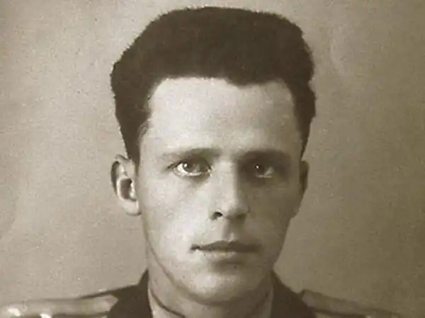

Радянсько-російський письменник, народився в 1924 р в місті Смоленськ. Його виховувала родина кадрового офіцера Льва Олександровича Васильєва. Мати письменника, Алексєєва Олена Миколаївна, виросла в родині народників, які займалися організацією таких гуртків, як комуна "фур'єристи" в Африці і "чайковців". Треба зауважити, що у Бориса з дитинства була звичка розпоряджатися своїм життям, як йому було завгодно. Так що, закінчивши дев'ять класів, він вирішує, нікого не запитавши, вступити до лав добровольців фронтовиків. У 1943 р, після контузії, він виявляється у Військовій Академії механізованих військ. Після її закінчення починає вести мирне життя на Уралі.
Васильєв знав про своє покликання з раннього дитинства, і, не особливо зволікаючи, приступив до своєї творчої діяльності. В 54-му році на загальний огляд виходить його п'єса — під назвою Танкісти, де він пише про післявоєнну армії. У 95-му р йдуть підготовки до самої зйомки п'єси, але вже названої по-іншому — "Офіцери". Не дочекавшись закінчення зйомок, група критиків знімає спектакль з показу, через цензурні міркувань. Але захоплення Васильєва не згасає у зв'язку з невдалим початком. Вже дуже скоро він приступить до видання п'єси "Стукайте і відкриється", що з'явилася на світ в 55-ом р, а через п'ять років — сценарію для сюжету "Довгий день". Пізніше він почне писати роман про російської інтелігенції: "Вам привіт від баби Лери ...", (1988 р) та ін. Варто відзначити, що в деяких його творах простежуються події, насправді відбулися в його родині.
Істинний успіх автор відчує, коли буде опублікована його повість "А зорі тут тихі", написана в 1969 році, яку в 1972 році інсценував і екранізував режисер Ростоцький. Біографією і діяльністю Васильєва глибоко зацікавлені і далекі закордонні країни, в яких багато читачів віддають перевагу саме цій повісті. Набагато пізніше, після численного перегляду і оцінки критиків, ця кінострічка в 1975 році отримає Державну премію СРСР. В основу теми повісті лягла ідея про несумісність милосердною людяності — з втіленими жіночими образами солдатів, які тримають в руках зброю: гранати, кулемети, автомати ... Через типажі цих молодих дівчат автор передає трагічну сторону неминучої загибелі світлих і абсолютно безкорисливих душ. Він зумів поєднати жорстокість і несправедливість війни, протиставивши їм сентиментально-романтичні серця юних дівчат. Воістину заслуговують захоплення створені ним образи молоденьких дівчаток, які зібрали в собі всю мужню стійкість і шалений правдолюбство, наприклад, Рита Осянина, Женечка, Ліза Бричкина і ін. З повісті "А зорі тут тихі". Б. Л. Васильєв по праву займає одну сходинку нарівні з видатними письменниками, наприклад, Достоєвським і Шукшиним. Всі свої твори він написав в цьому ж стилі. Він до останнього свого подиху був вірний своїй спочатку обраної тематики. На першому плані у нього завжди були любов, співчуття і товариство, а на задньому він мав у своєму розпорядженні мерзенні боку цинічного прагматизму, зради і малодушності. Всі ці теми висловлені в його наступних творах: "не стріляйте в білих лебедів", "здається, зі мною підуть у розвідку", "в списках не значився", Він не просто описує жахи військових подій і горе, пережите народом, а й піднімає на поверхню всю небезпеку і брехня, якою просякнута війна. Насильницьке вторгнення іншої нації не повинно було вплинути на природний хід буття російського народу. У проблемах "смутного часу" він знаходить головні проблеми і вади уряду, і акцентує на цьому увагу людей в своїх романах, наприклад, в "Князі Ярославлі і його синів (1997)". Він не просто викладає свої думки на папері, він стимулює народ своїми вчинками. У багатьох своїх творах 1980-1990 рр. він закликає встановити пріоритет народної культури над політичними чварами. У 1989 р він виходить з КПРС і більше не проявляє інтерес до "перебудовних" політичних акцій. Васильєва нагородили премією імені Сахарова "за громадянську мужність". Письменник помер у м Москві березня в 2013 р